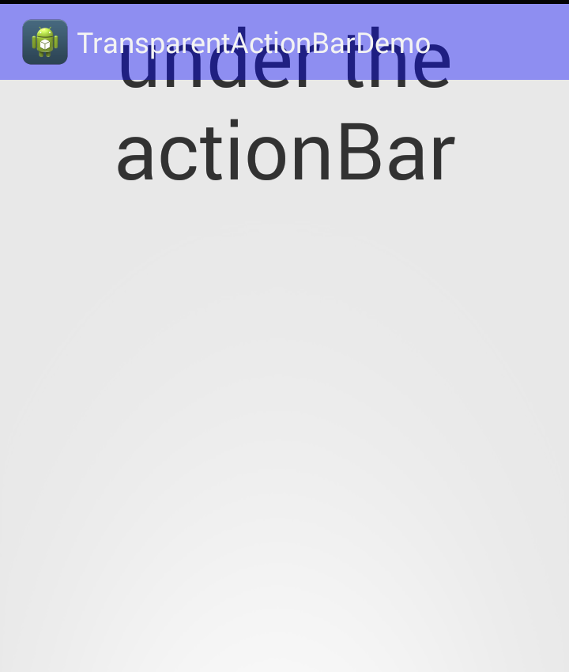

Android-透明のActionBar
如果想實做一個透明ActionBar,可以用以下程式碼完成。
import android.app.Activity;
import android.graphics.Color;
import android.graphics.drawable.ColorDrawable;
import android.os.Bundle;
import android.view.Window;
public class MainActivity extends Activity {
@Override
protected void onCreate(Bundle savedInstanceState) {
super.onCreate(savedInstanceState);
//設定ActionBar覆蓋在畫面的上面（浮空效果）
requestWindowFeature(Window.FEATURE_ACTION_BAR_OVERLAY);
ColorDrawable mDrawable = new ColorDrawable();
mDrawable.setColor(Color.BLUE);
mDrawable.setAlpha(100);
getActionBar().setBackgroundDrawable(mDrawable);
setContentView(R.layout.activity_main);
}
}
這段程式碼可以讓ActionBar,達到懸浮效果
requestWindowFeature(Window.FEATURE_ACTION_BAR_OVERLAY);
然後再設定背景.
ColorDrawable mDrawable = new ColorDrawable();
mDrawable.setColor(Color.BLUE);
mDrawable.setAlpha(100);
getActionBar().setBackgroundDrawable(mDrawable);
結果畫面：
